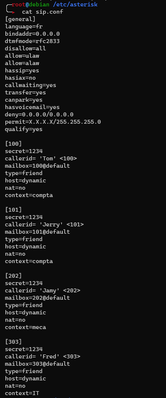
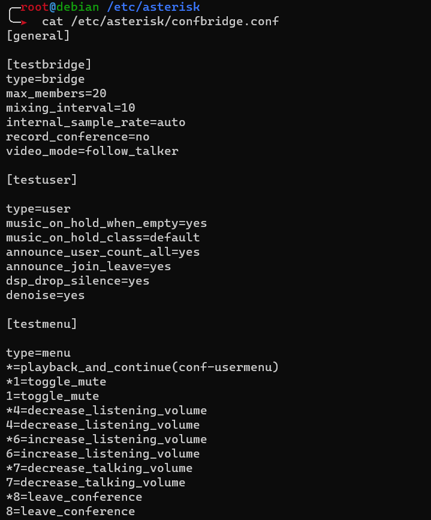

Asterisk
Ajouter un utilisateur
/etc/sip.conf
[100]
secret=1234
callerid= 'Tom' <100>
mailbox=100@default
type=friend
host=dynamic
nat=no
context=compta
/etc/extensions.conf
[default]
[compta]
exten => _1XX, 1, Answer()
exten => _1XX, n, Playback(hello-world)
exten => _1XX, n, Dial(SIP/${EXTEN},10)
exten => _1XX, n, VoiceMail(${EXTEN})
exten => _1XX, n, Hangup()
Ajouter une boîte vocale
/etc/voicemail.conf
[default]
100 = 123, Tom, tom@default
Appel de groupe
A la suite
/etc/extensions.conf
exten => 222, 1, Dial(SIP/100,15)
exten => 222, 2, Dial(SIP/101,15)
exten => 222, 3, Hangup()
En même temps
/etc/extensions.conf
exten => 223, 1, Dial(SIP/100&SIP/101,30)
exten => 223, n, Hangup()
Créer des contextes
/etc/sip.conf
[100]
secret=1234
callerid= 'Tom' <100>
mailbox=100@default
type=friend
host=dynamic
nat=no
context=compta
/etc/extensions.conf
[compta]
exten => _1XX, 1, Answer()
exten => _1XX, n, Playback(hello-world)
exten => _1XX, n, Dial(SIP/${EXTEN},10)
exten => _1XX, n, VoiceMail(${EXTEN})
exten => _1XX, n, Hangup()
Appel conférence
/etc/extensions.conf
exten => 333, 1, Answer()
exten => 333, n, ConfBridge(4444,testbridge,testuser,testmenu)
/etc/confbridge.conf
[general]
[testbridge]
type=bridge
max_members=20
mixing_interval=10
internal_sample_rate=auto
record_conference=no
video_mode=follow_talker
[testuser]
type=user
music_on_hold_when_empty=yes
music_on_hold_class=default
announce_user_count_all=yes
announce_join_leave=yes
dsp_drop_silence=yes
denoise=yes
[testmenu]
type=menu
*=playback_and_continue(conf-usermenu)
*1=toggle_mute
1=toggle_mute
*4=decrease_listening_volume
4=decrease_listening_volume
*6=increase_listening_volume
6=increase_listening_volume
*7=decrease_talking_volume
7=decrease_talking_volume
*8=leave_conference
8=leave_conference
IVR
/etc/extensions.conf
[IVR]
exten => 11, 1, Log(NOTICE, Debut IVR)
exten => 11, 2, Answer()
exten => 11, 3, Set(TIMEOUT(response)=10)
exten => 11, 4, agi(googletts.agi, "Bienvenue dans notre entreprise",
fr, any)
exten => 11, 5, agi(googletts.agi, "Qui souhaitez vous joindre ?",
fr, any)
exten => 11, 6, agi(googletts.agi, "Pour le 100, tappez 1", fr, any)
exten => 11, 7, agi(googletts.agi, "Pour le 101, tappez 2", fr, any)
exten => 11, 8, agi(googletts.agi, "Appuyez sur dièse si vous souhaitez
réécouter ce message", fr, any)
exten => 1, 9, WaitExten()
exten => 1, 1, Goto(local,100,1)
exten => 2, 1, Goto(local,101,1)
exten => _[3-9#], 1, Goto(IVR,11,4)
exten => t, 1, Goto(local,100,3)
Fichiers sons
/var/lib/asterisk/sounds
Captures d'écran
/etc/extensions.conf

/etc/sip.conf

/etc/voicemail.conf

/etc/confbridge.conf
